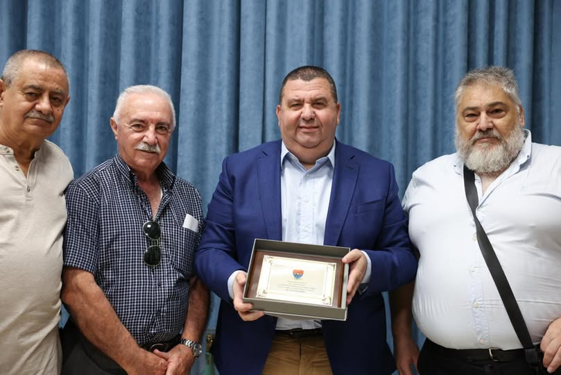

29 July 2026
Dear members.
Today three members of our Veterans Committee, Tony Grech, Aristide Galea and Noel Mifsud, attended a courtesy meeting with Dr G. Bedingfield, Minister of the Interior and National Security. We continued to discuss the issues that we had raised with both Prime Minister Dr R. Abela and the Leader of the Opposition Dr A. Borg before the election last May.
- It was a satisfying meeting because we saw great cooperation on the part of the Ministry.
- The Minister assured us that he will discuss our proposals and get back to us.
As you can see, although the Office is closed, as a Committee we are continuing to do our best to discuss matters with those concerned. We appeal to anyone who is not a member, but a follower of this page, to become a member because the more support we have, the more openly we can speak.
